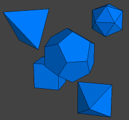

SVG-VML-3D 1.3
(
click here for the math behind it)
(
click here for some documentation)
What is SVG and what is VML ?
SVG (Scalable Vector Graphics) is a format which is recomended by the W3C for the description of vector graphics, especially
for the use in Web pages. In order to view a page with included SVG objects, you must install a plugin for your
webbrowser. You can get one for free from
http://www.adobe.com/svg/.
There are plugins available for many webbrowsers.
VML (Vector Markup Language) is another format for the description of vector graphics, which is currently only
used by Microsoft Internet Explorer. You can view a web page with vml code with any Internet Explorer 5.x or higher, no need
to install anything before viewing.
What is SVG-VML-3D ?
SVG-VML-3D is a free JavaScript library which can be used to draw and manipulate 3D objects in html pages by using
SVG or VML. The JavaScript code which has to be typed into the html page to define the Scene (3D Objects, Viewer Position, Light, ...)
is the same for SVG and VML. If the browser is IE, then automatically VML will be used, otherwise SVG will be used.
What can I do with this library?
One pic is more than 1000 words, so have a look at this examples by clicking on the pictures.
Make sure, you use Internet Explorer or have installed a SVG plugin for your browser. For a first impression,
how easy it is to display 3D objects using this library, have a look at the source code of the respective html files.
The file svgvml3d.js is the core of the library and must always be included. If you want to use a 3D chart, then the file
boundingbox.js must be included. Additionally, you can define your own classes for specific 3D objects. The objects, which
are defined in the files platonic.js and colorbox3d.js are only used in their specific context. Have a look at those 2 files,
to see how you can define your own objects for the use with this library.

Platonic solids
|
3D chart
|
|---|
Function plotter
|
Rubiks cube
|
|---|
Where do I get this library?
If you have clicked on one of the pictures, then you already have it in the cache of your webbrowser ;-)
But for your convenience I give you a link to
download the whole stuff.